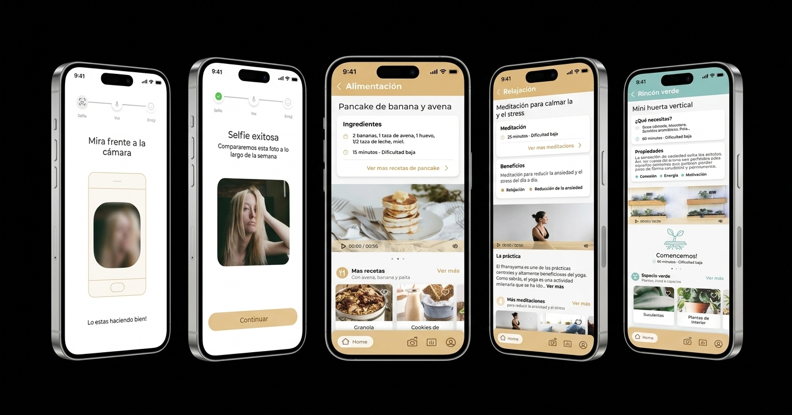
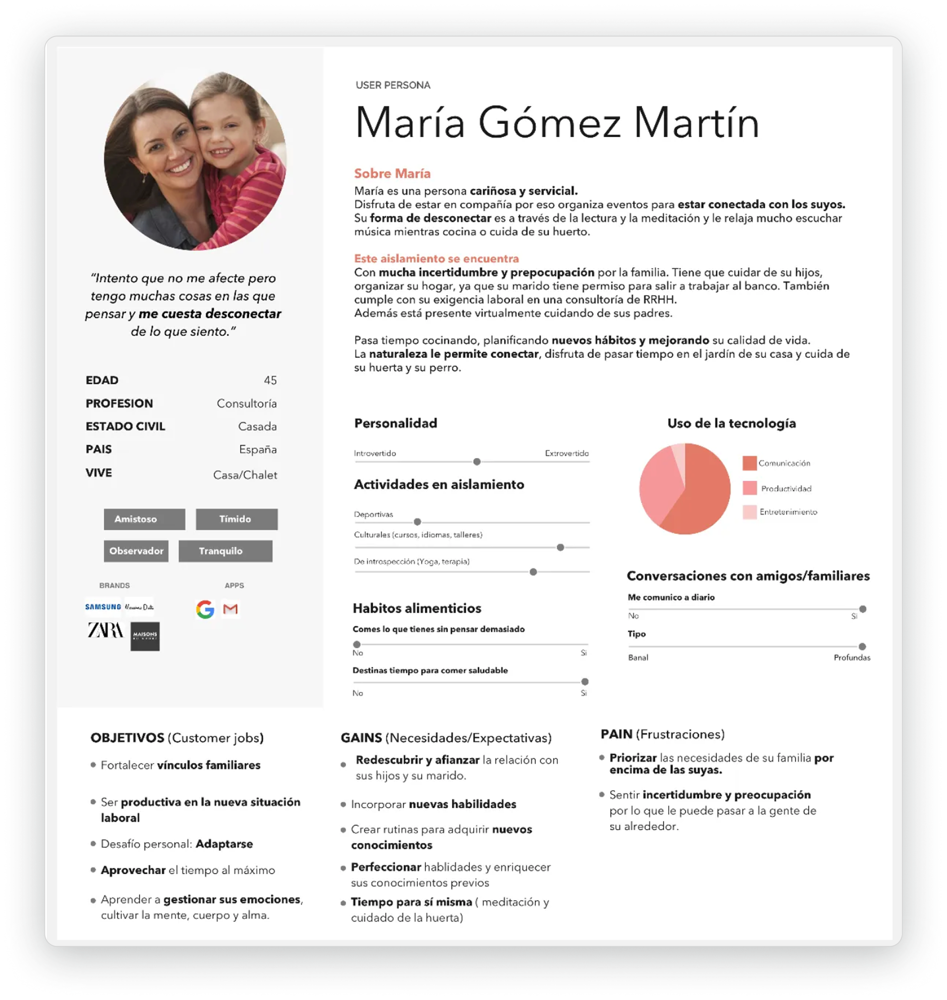
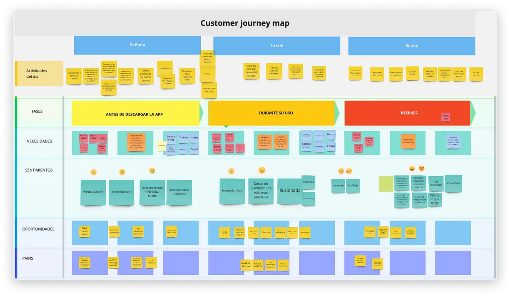
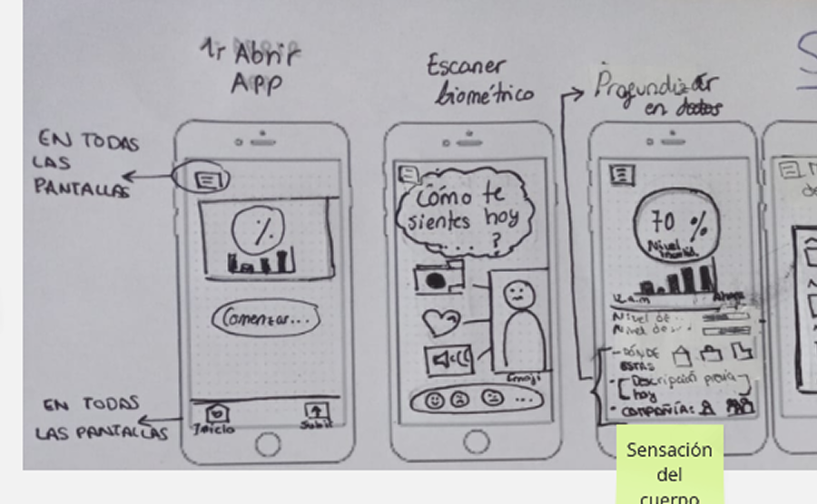
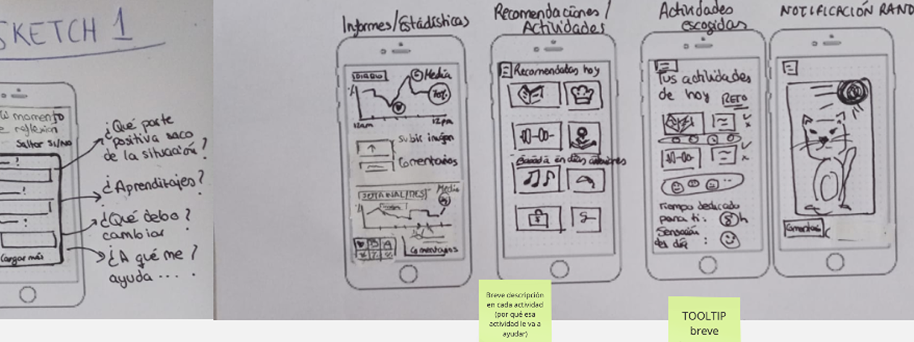
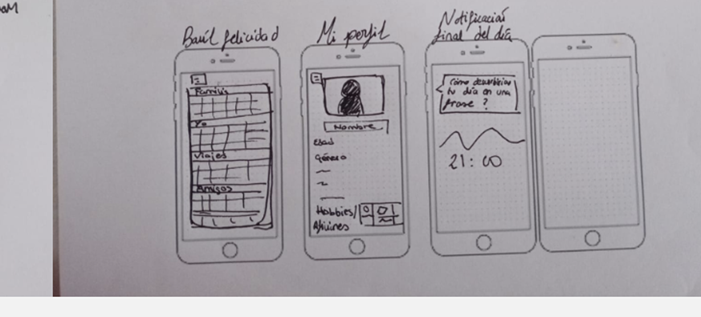
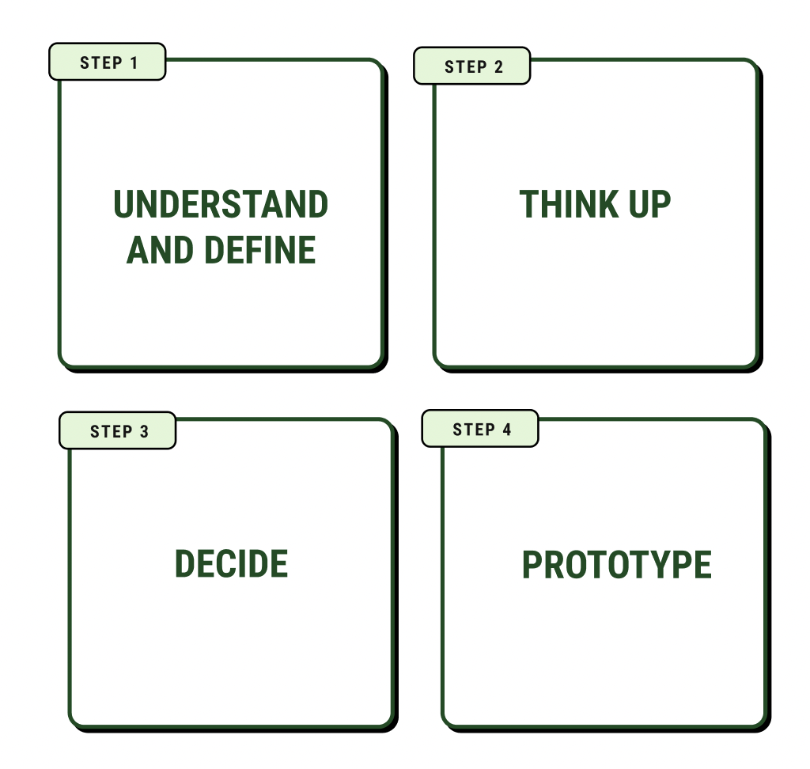

Hotaru nació durante una mentoría de UXER School España en 2020, en pleno aislamiento por la pandemia. Como equipo planteamos distintos problemas relacionados con "aislamiento – reconexión" y, por votación, elegimos el que más nos interpelaba.
Detectamos que teníamos la tecnología para acompañarnos, pero no sabíamos usarla para conectar con nosotros mismos.
¿Cómo podríamos usar la tecnología de forma apropiada para conectar con nosotros mismos?

Analizando patrones en las entrevistas y datos relevados llegamos a un insight clave: las mujeres de entre 37 y 55 años, con hijos, eran quienes estaban atravesando un loop emocional más marcado — y donde teníamos mayor oportunidad de generar impacto.
Mapeamos el día completo de María cruzando sus actividades con tres fases: antes de descargar la app, durante su uso y después. El recorrido emocional es elocuente: arranca en preocupación e incertidumbre, durante el uso de la app aparece la ilusión de planificar una vida más saludable, y después, confianza y valoración de lo que se tiene. Ese arco emocional terminó siendo el corazón de la propuesta de valor de Hotaru.

Con los insights ya analizados, y tras varias sesiones de diálogo y votación, llegamos a tres HMW que organizaron el trabajo de ideación en cuatro ejes: emociones/incertidumbre/seguridad, tiempo/rutinas/actividades, uso de la tecnología y conexión con otros.
Hicimos una dinámica de Crazy Eights en equipo para explorar rápido muchas soluciones posibles antes de converger. De ahí surgió el primer flujo: apertura de la app, escaneo biométrico, nivel de ánimo del día, informes y recomendaciones de actividades, baúl de felicidad, perfil y cierre del día con una frase reflexiva.



